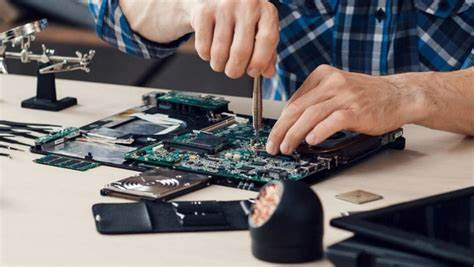

Reparacion de Cajas
El mantenimiento correctivo de computadoras es un tipo de mantenimiento informático que busca corregir errores de funcionamiento reemplazando componentes o depurando fallas en el sistema.
El mantenimiento correctivo de computadoras es un tipo de mantenimiento informático que busca corregir errores de funcionamiento reemplazando componentes o depurando fallas en el sistema.
Todo lo que busca de Repuestos para Computadoras en Guatemala lo encuentra aquí.
A medida que el equipo de computo trabaja día con día, es inevitable que éste o cualquier componente del mismo se contamine de particulas de polvo o de humedad. Fuente de poder o fuente de alimentación, son equipos cuya principal función es transformar la energía. Micro ATX: Es un tipo de factor de forma para placas base de computadoras pequeño y estándar. Tarjeta Gráfica Una tarjeta gráfica o tarjeta de video es una tarjeta de expansión de la tarjeta madre; que se encarga de procesar los datos provenientes del procesador y transformarlos en información comprensible El disipador transfiere la energía del calor de un aparato a otro entorno más frio, tienen incorporado uno o dos ventiladores que ayudan a disipar de forma más rápida el calor. Un procesador o microprocesador es aquel chip que se encuentra integrado en la placa base y que se encarga de ejecutar las instrucciones que ordena el usuario. Widgets Son accesorios o elementos imprescindibles en un computador, como el mouse, teclado, diademas, conexiones, cámaras; estos forman parte fundamental del usuario y el computador
El mantenimiento correctivo de computadoras es un tipo de mantenimiento informático que busca corregir errores de funcionamiento reemplazando componentes o depurando fallas en el sistema.En Laptop reparación podemos reparar su computadora y tu laptop para que funcionen como cuando la compraste. Tenemos experiencia tanto hardware y software, por lo que tendremos una solución para ti.
Se caracterizan por tener un tamaño mucho más reducido que las de escritorio, así como también son mucho más livianas, lo que le permite al usuario poder transportarlas.
Se caracterizan por necesitar estar siempre enchufadas. Además, tienen el CPU en un gabinete, en el que también se coloca la compactera y los puertos de USB.
Se conoce bajo este nombre a aquellas computadoras que tienen la capacidad de llevar adelantes procesos extremadamente complejos, que las personales no pueden ejecutar.
Las netbooks son aún más portátiles que las laptops y más económicas. Son livianas y pequeñas, con pantallas que no superan las 10” o 12”.